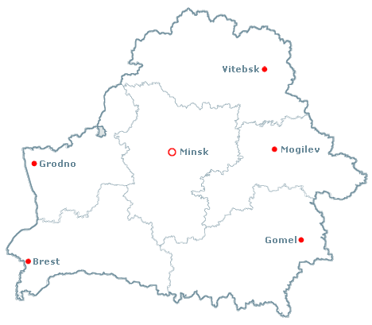

Your browser doesn't support the features required by impress.js, so you are presented with a simplified version of this presentation.
For the best experience please use the latest Chrome, Safari or Firefox browser.
Kinaklub.org
гэта...
і мы любім кіно
- авангарднае
- маргінальнае
- некамерцыйнае
- аматарскае
большасць нас з Мінску

але мы актыўна супрацоўнічаем з рэгіёнамі
і марым пра сапраўднае сеціва
культурны абмен з замежжам
Нямеччына, Украіна, Канада
у нас ёсць
прынцыпы
прынцып 1
кінаманства
мы усе любім кіно і не можам без яго жыць
прынцып 2
самаарганізацыя
існуем толькі дзякуючы ініцыятыўнасці ўдзельнікаў
прынцып 3
адчыненая культура
спрабуем рэалізаваць прынцып адчыненасці у любой сферы нашай дзейнасці
прынцып 4
дэцэнтралізацыя
у нас няма намінальных лідараў, але разам з тым існуе павага да зробленай працы
прынцып 5
некамерцыйнасць
і узаемадапамога
у сваёй дзейнасці мы спрабуем працаваць у альтэрнатыўнай да традыцыйных арганізацый рэальнасці
Самыя
ўдалыя
праэкты
міжнародны фестываль Cinema Perpetuum Mobile
filmfest.by
туры замежных фільммейкераў па Беларусі
- Filmgruppe Chaos (2009, 2010)
- Pierre-Luc Vaillancourt (2012)
рэгулярныя кіналекторыі
- галерэя Шчамялёва (з 2007)
- ДК La мора (з 2011)
- планетарый (2008-2009)
кінакааператыў
адукацыйныя кінасемінары (лета 2011)